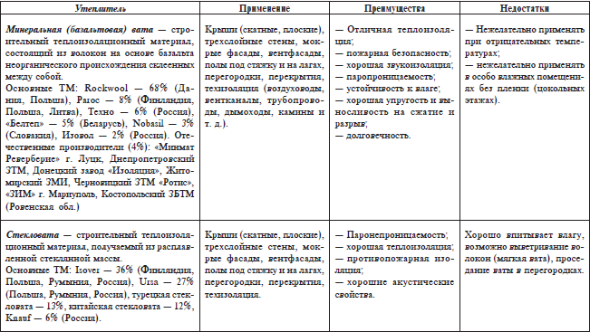
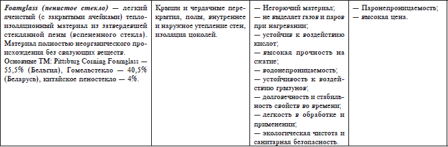

Акустические материалы и изделия.


Под звуком понимают волнообразно распространяющееся колебательное движение частиц упругой среды (воздуха, воды, твердого тела). Частотный диапазон звуков, слышимых человеческим ухом, лежит в пределе от 15 до 20 000 Гц (1 Гц – 1 кол/с). Волны с меньшими и большими частотами человеческим ухом не воспринимаются. Звуки могут быть разделены на музыкальные, шумы и звуковые импульсы.
Таблица 2. Характеристики утеплителей


Количество энергии, приносимое звуковой волной ежесекундно через площадку в 1 см перпендикулярно направлению распространения волны, называется силой звука.Сила звука пропорциональна квадрату амплитуды колебаний частиц среды, а также квадрату амплитуды колебаний давления в звуковой волне. Сила звука выражается в децибелах (дБ), а физиологической характеристикой его служит уровень громкости звука, выражаемый в фонах. Скорость распространения звука в воздухе – 340 м/с при 15 °C.
Шум– совокупность многочисленных звуков, быстро меняющихся по частоте и силе. Шумы по своему характеру могут быть слышимыеи неслышимые, воздушныеи ударные.Длительное воздействие слышимого шума, особенно высокочастотного, на органы слуха и вредно для здоровья человека.
Уровень шума значительно снижается, если на основе методов архитектурной акустики приняты правильные конструктивные и отделочные решения помещений. Архитектурная акустика – раздел строительной физики, рассматривающий звуковые процессы в помещении. Наряду с этой областью науки различают строительную акустику, рассматривающую вопросы звукоизоляции ограждающих конструкций зданий от воздушного и ударного шумов.
Звуковая энергия, падающая на ограждающую конструкцию (пол, стену, потолок), частично отражается от ее поверхности, частично поглощается материалом конструкции, а частично проходит через нее и передается на другую сторону конструкции. Способность материала пропускать через себя звук характеризует его звукопроницаемость или, если пользоваться обратным понятием, звукоизоляцию. Звукоизоляционная способность материала в ограждении оценивается по разности уровней звука с обеих сторон ограждения и выражается, как и сила звука, в децибелах. Материалы, обладающие преимущественным свойством поглощать звуковую энергию, относятся к звукопоглощающим, а материалы, способные изолировать от проникновения звука, – к звукоизоляционным. Все они имеют общее название – акустические материалы.
Звукопоглощающиеи звукоизоляционныестроительные материалы и изделия классифицируют по следующим основным признакам: назначению, форме, жесткости (величине относительного сжатия), возгораемости и структуре.
Звукоизоляционные материалы и изделияЗвукоизоляционные материалы и изделия применяют главным образом в виде прокладок и прослоек в перекрытиях, во внутренних и наружных ограждениях и других частях зданий с целью гашения ударных шумов, передаваемых через перекрытие (хождение по полу), вибрации (работа машин) и т. п.
Звукоизоляционные материалы в строительных конструкциях могут находиться в свободном (не сжатом), подвешенном (например, крепление плит к потолку с воздушной прослойкой) или сжатом состоянии (например, между несущими панелями потолка и конструкцией пола). Звукоизоляционные материалы, находящиеся в свободном и рыхлом состоянии, применяются для изоляции от воздушного шума, а сжатые – от ударного шума. Для материалов, применяемых в свободном состоянии (в конструкциях стен, перекрытий), толщина не должна превышать 5 см, а в сжатом состоянии (например, в перекрытиях под полом) – не менее 1,2 см.
Звукоизоляционные материалы бывают пористо-волокнистой структуры(на основе минеральной или стеклянной ваты, асбестового и другого вида волокон), пористо-губчатой(на основе пластмасс и различного вида резины) и сыпучиеестественного и искусственного происхождения (песок, шлак и др.). Первые имеют форму плит, рулонов, матов, полосовых и штучных прокладок. По величине относительно сжатия под нагрузкой различают звукоизоляционные материалы твердые, жесткие, полужесткиеи мягкие.
Основной расчетной характеристикой, по которой определяют условия их применения в конструкциях, является динамический модуль упругости. По этой величине звукоизоляционные материалы делят на три группы: 1-я группа – материалы с динамическим модулем упругости меньше 1 МПа; 2-я группа – 1–5 МПа; 3-я группа – 5—15 МПа.
Звукоизоляционные материалы 1-й группы применяют в виде плит, рулонов и матов, уложенных сплошным слоем в конструкциях перекрытий с «плавающим» полом, а также многослойных перекрытий, стен и перегородок для звукоизоляции от воздушного и ударного шума. Звукоизоляционные материалы 2-й группы используют в виде полосовых и штучных прокладок в конструкциях межэтажных перекрытий с «плавающим» полом и в многослойных перекрытиях для изоляции от ударного шума. Звукоизоляционные материалы 3-й группы используют в виде засыпок в многослойных конструкциях межэтажных перекрытий для улучшения изоляции от ударного и воздушного звука.
Звукоизоляционные материалы плотностью до 200 кг/м делят на марки от 15 до 200, материалы с плотностью выше 200 кг/м по этому признаку не маркируют. Указанным требованиям удовлетворяют звукоизоляционные материалы и изделия пористо-волокнистой и пористо-губчатой структуры.
Для гашения и локализации вибраций применяют вибропоглощающие материалы– поливинилхлоридные и полиэтиленовые жесткие и мягкие листовые материалы, листовую резину, битумные и полимерные мастики, в том числе каучуковые, поливинил ацетатные, эпоксидные и др. К звукоизоляционным относятся главным образом эластичные материалы: маты и плиты полужесткие минераловатные на синтетическом связующем; плиты, маты и рулоны из стеклянного штапельного волокна; плиты древесноволокнистые изоляционные; плиты из полистирольного пластифицированного пенопласта; плиты фибролитовые на портландцементе; песок речной, шлак топливный или металлургический и крошка из пробки. Стекловатные и минераловатные маты и плиты на синтетическом связующем имеют плотность 50—225 кг/м , относительное сжатие 15–40 % при нагрузке 0,02 МПа и динамический модуль упругости 0,3–0,7 МПа.
Древесноволокнистыеи фибролитовыеплиты на портландцементе применяют в конструкциях перекрытий под полами для изоляции от ударного шума, они имеют относительное сжатие при той же нагрузке до 1,5 %, а динамический модуль упругости – 1,0–1,8 МПа.
Плиты из полистирольного эластифицированного пенопластамарки ПСБ-Э изготовляют плотностью 20–35 кг/м с динамическим модулем упругости 0,8–1,0 МПа.
Указанные изделия обеспечивают звукоизоляцию железобетонных межэтажных перекрытий, равную 35–40 дБ. Такая изоляция отвечает нормам проектирования.
Основным сырьем для производства акустических плит служат минеральная вата, стеклянное штапельное волокно, крахмал, литопон, поливинилацетатная эмульсия и др. Технологический процесс изготовления плит состоит из рыхления и грануляции минеральной ваты, смешивания полученных гранул со связующим, формования плит, сушки и механической обработки, окраски и упаковки.
Звукоизоляционно-прокладочные материалыприменяют для сплошных прокладок под полы (маты и плиты минераловатные и стекловатные, плиты древесноволокнистые изоляционные), для полосовых прокладок в конструкциях перекрытий обычного типа (плиты древесноволокнистые, асбестоцементные) и раздельного типа (пакеты из асбестового картона).
Звукопоглощающие материалы и изделияЗвукопоглощающими называют материалы, применяемые для внутренней отделки помещений с целью улучшения акустических свойств последних. Основной целью применения звукопоглощающих материалов является снижение слышимых шумов в промышленных и общественных зданиях.
Звукопоглощающие материалы способны обеспечивать требуемую продолжительность реверберации в помещениях различного назначения, причем коэффициент звукопоглощения, измеренный в диффузном поле (в реверберационной камере при непосредственном размещении материала или изделия на жестком основании) в частотных полосах 125–500, 500—2000 и 2000–8000 соответственно не ниже 0,2; 0,4 и 0,6. Под реверберациейпонимают наличие постепенно затухающего в закрытом помещении звука вследствие повторных отражений после прекращения звучания. Время реверберации в зависимости от вида помещений и частот составляет 0,2–2 секунды.
Звукопоглощающие материалы применяют для равномерного распределения уровней полезного сигнала по площади в данном помещении, а также для предотвращения распространения звука вдоль длинных помещений. По характеру поглощения звуказвукопоглощающие материалы делят на пористые с твердым скелетом,в которых звук поглощается в результате вязкого трения в порах, при этом звуковая энергия переходит в тепло (пеностекло, газобетон и другие пористые материалы с твердым скелетом); пористые с гибким скелетом, в которых, кроме резкого трения в порах, возникают релаксационные потери, связанные с деформацией нежесткого скелета (минеральная, скелетная, базальтовая и хлопковая ваты, древесноволокнистые плиты и другие аналогичные по характеру материалы); панельные материалы и конструкции, звукопоглощение которых обусловлено активным сопротивлением системы, совершающей вынужденные колебания под действием падающей звуковой волны (тонкие панели из фанеры, жесткие древесноволокнистые плиты, звуконепроницаемые ткани и т. п.). Звукопоглощение пористых материалов можно также увеличить посредством устройства воздушного слоя между ними и ограждающей конструкцией.
По структуреразличают звукопоглощающие материалы: пористо-зернистые, пористо-волокнистыеи пористо-губчатые,а по степени твердости скелетаих делят на мягкие, полужесткие, жесткиеи твердые.В зависимости от вида звукопоглощающие материалы выпускаются в виде плит, рулонов и сыпучих материалов; их используют также в виде штукатурки, имеющей гладкопористую, перфорированную и бороздчатую структуру.
В ограждающих конструкциях звукопоглощающие материалы применяют в виде однослойного однородного материала с офактуренной поверхностью, многослойного пористо-волокнистого с жестким перфорированным покрытием, а также в виде штучных материалов разнообразных размеров и формы, однослойных и многослойных.
Из конструкций без защитной оболочки наиболее распространены минераловатные акустические плиты на синтетическом связующем типа ПА/С, ПА/О и ПА/Д; плиты из гранулированной минеральной ваты на крахмальном связующем; плиты из штапельного стеклянного волокна типа ПС и ПЖС; базальтовые звукопоглощающие маты марки БЗМ; древесноволокнистые плиты с перфорацией; гипсовые плиты, армированные стекловолокном со сквозной перфорацией; плиты из ячеистого бетона типа «Силак-пор» с пористой структурой и перфорацией лицевого слоя; плиты из газосиликата и др.
Звукопоглощающие материалы с защитными оболочками применяют в ограждающих конструкциях. Это минераловатные полужесткие плиты марок ПП, ППМ на синтетическом связующем; мине-раловатные маты прошивные на металлической сетке; маты из штапельного стеклянного волокна на синтетическом связующем; маты из супертонких стеклянных волокон, а также холсты и маты из перепутанных супертонких базальтовых волокон. В строительстве общественных зданий успешно используют защитные оболочки и экраны, которые изготовляют из стеклянного или капронового волокна, гипсовых перфорированных плит, с тыльной стороны оклеенных технической бязью.
Толщина защитных перфорированных покрытий для звукопоглощающих материалов и изделий I класса в диапазоне средних и высоких частот не должна превышать 1,5 мм, а для изделий всех классов в диапазоне низких частот – не более 10 мм. В ряде случаев в качестве звукопоглощающих материалов применяют древесностружечные плиты, акустическую штукатурку с заполнителем из обожженной каолиновой корки или перлитового песка.
Минераловатные акустические плиты ПА/С, ПА/О и ПА/Д изготовляют из минерального волокна путем пропитки его синтетическим связующим с последующей тепловлажностной обработкой в специальных камерах. Полученные заготовки подвергают механической обработке, после чего на них наносят декоративный покровный слой. Указанные плиты выпускают размером 500x500x20 мм, плотностью 130–140 кг/м и пределом прочности на разрыв до 0,4 МПа, коэффициентом звукопоглощения 0,4–0,87 в интервале частот от 500 до 2000 Гц. Хорошие декоративные качества минераловатных акустических плит позволяют широко использовать их для облицовки потолков, вестибюлей театров, концертных залов, радиостудий и помещений со значительным шумовыделением.
Плиты, изготовляемые на основе гранулированной минеральной ваты и композиций крахмального связующего с добавками, выпускают размером 300x300x20 мм, плотностью 350–400 кг/м и пределом прочности при изгибе 0,7–1,0 МПа, с высоким коэффициентом звукопоглощения – до 0,8. Эти плиты предназначены для звукопоглощающей отделки потолков и верхней части стен помещений общественных и административных зданий, эксплуатируемых с относительной влажностью воздуха не более 70 %. Лицевая поверхность плит имеет фактуру в виде направленных трещин (каверн), подобно фактуре поверхности выветрившегося известняка. Крепление плит к перекрытию осуществляется с помощью металлических профилей, их можно также приклеивать специальными мастиками непосредственно к жесткой поверхности.
Плиты из газосиликата обладают хорошими эксплуатационными и архитектурно-строительными свойствами и представляют особую группу звукопоглощающих материалов, в том числе с макропористой структурой. Из газосиликата изготовляют плиты размером 750x350x25 мм, плотностью 500–600 кг/м и пределом прочности при сжатии 1,5–2,0 МПа, коэффициентом звукопоглощения в диапазоне частот от 500 до 4000 Гц для микропористых плит 0,2–0,3, а для макропористых – 0,6–0,9. Технологический процесс производства плит состоит из смешения сырьевых материалов – извести, песка и красителя, заливки приготовленного раствора в формы и автоклавной обработки, после чего изделия фрезеруют и калибруют. Хорошим внешним видом, достаточной огнестойкостью и высокими звукопоглощающими свойствами обладают акустические перфорированные плиты из сухой штукатурки и гипсовые перфорированные плиты с минераловатным звукопоглотителем. Их широко используют для внутренней отделки стен и потолков в культурно-бытовых и общественных зданиях.
Акустические экраны из сухой гипсовой штукатурки получают методом штамповки. Сухую гипсовую штукатурку, разрезанную на плиты размером 1000x500x8 мм, направляют на пресс-штамп, на котором проделываются отверстия диаметром 6 и 10 мм. После штамповки экраны подают на шлифовальные станки для снятия шероховатостей, далее на конвейер для приклейки подстилающего слоя из ткани с одновременной подсушкой клея. Для облицовки стен и потолков помещений с относительной влажностью воздуха не более 70 % экраны выпускают с минераловатным или стекловолокнистым звукопоглотителем.
Акустические гипсовые перфорированные плиты с минераловатным звукопоглотителем состоят из гипсовой скорлупы, армированной стекложгутом и стальной проволокой диаметром 0,8—
1.2 мм, минеральной ваты ПП-80, вкладываемой в свободные секции гипсовой плиты, и алюминиевой фольги, которая защищает вату от увлажнения. Плиты имеют коэффициент звукопоглощения до 0,7 при частотах звука 400—1500 Гц.
Асбестоцементные акустические экраны отличаются высокой механической прочностью (до 10 МПа), огнестойкостью, они долговечны и гигиеничны, обладают хорошими декоративными качествами и высоким коэффициентом звукопоглощения – 0,6–0,9. Асбестоцементные акустические плиты производят двух видов: перфорированные с круглыми или щелевыми сквозными отверстиями и с перфорированными экранами из асбестоцемента с минерал оватным звукопоглотителем.
Перлитовые звукопоглощающие плиты изготовляют на основе вспученного перлита на вяжущем из жидкого стекла или синтетических смол с добавкой пигментов для придания различной цветовой окраски. Перлитовые плиты производят размером 300x300x30 мм, плотностью 250–500 кг/м , пределом прочности при изгибе 0,4—
1.2 МПа, коэффициентом звукопоглощения до 0,7 в интервале частот от 500 до 2000 Гц. Применяют их для снижения уровня шума и создания хороших акустических условий в помещении.